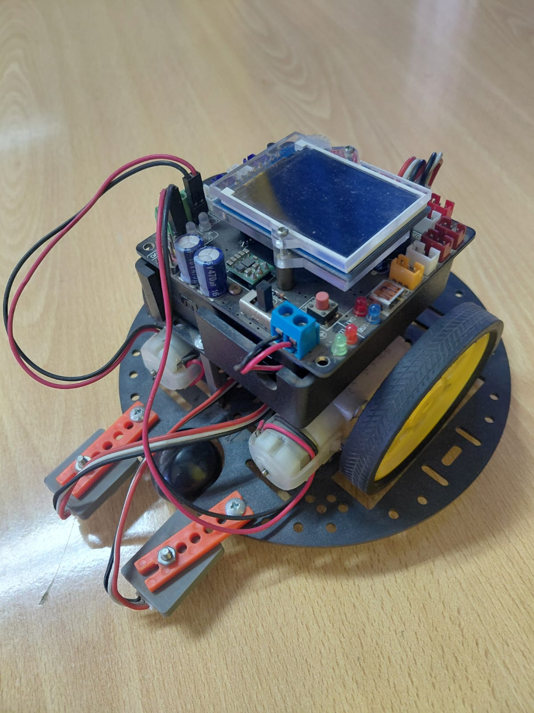
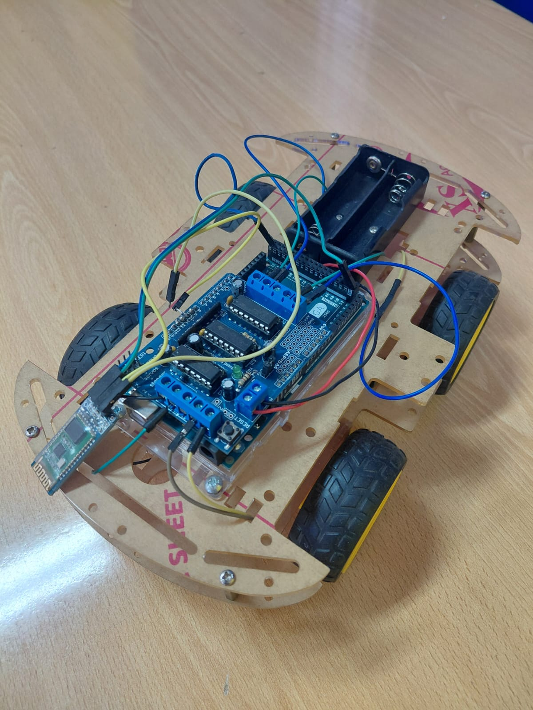
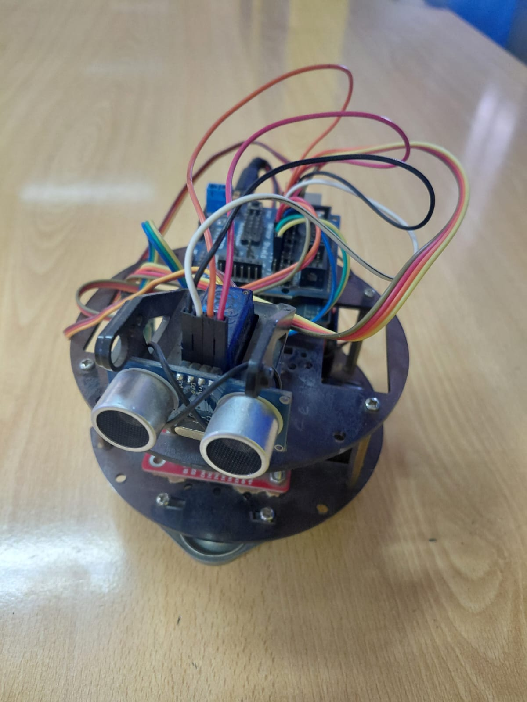
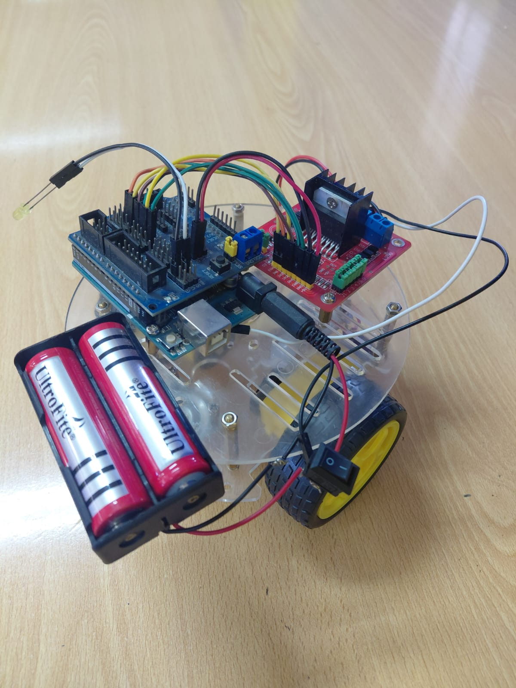
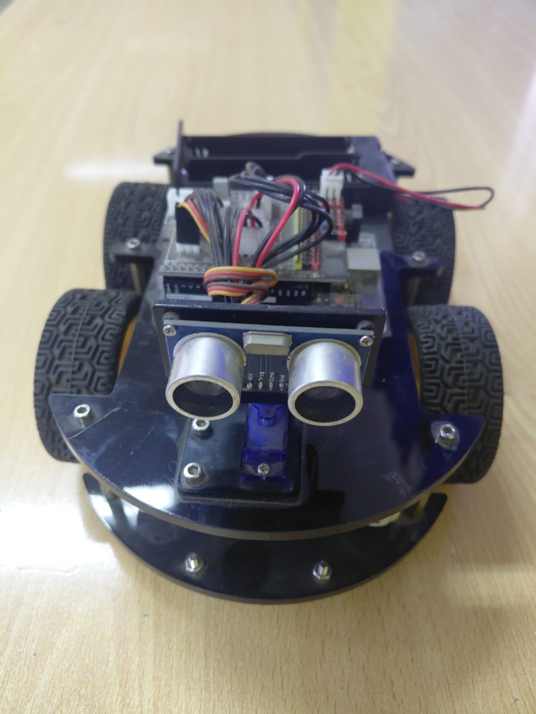

What this guide covers
This isn't a tutorial for a single "best" robot — it's a record of how the design actually evolved across four semesters, driven by real student feedback, real failures and real budget constraints. All six photos below are from these actual builds.
Version 1 — AFMotor shield + Arduino Mega + LCD

The first version used an Arduino Mega with an AFMotor shield — a stacked board that drives up to four DC motors via the Adafruit motor library. The Mega was chosen for its extra pins, since students kept running out of pins on the Uno when they added sensors mid-project. The LCD on top was a late addition: students wanted to see the ultrasonic distance reading in real time rather than opening the Serial Monitor every time.
What it used
- Arduino Mega 2560 + AFMotor shield (stacked)
- 4× DC motors controlled via
AF_DCMotorlibrary - HC-05 Bluetooth module on pins 10/11 via
SoftwareSerial - LCD display (added mid-semester)
- Two servos on orange brackets (planned gripper, never completed)
- LED on pin 52 as status indicator
What went wrong
The AFMotor shield + Mega combination worked but was expensive and physically large. More critically, the AF_DCMotor library uses PWM pins that overlap with the servo library on the Mega — students who tried to add servos mid-project hit incompatibility issues that took a full session to diagnose. The LCD wiring also consumed most of the remaining digital pins, leaving no room for sensors. The planned gripper was abandoned because there were no pins left to control it.
Version 2 — Wooden chassis, L293D shield, Bluetooth

Version 2 moved to a laser-cut wooden chassis and replaced the AFMotor shield with a simpler L293D-based motor driver shield. The Mega was replaced with an Uno — cheaper, smaller, and sufficient now that the LCD had been dropped. The Bluetooth module (HC-05, visible at the left side of the chassis) handles both manual control and mode switching.
What it used
- Arduino Uno + L293D motor driver shield
- Laser-cut MDF chassis (4WD with 4 yellow DC motors)
- HC-05 Bluetooth on pins 10/11
- Battery holder (4×AA) at the rear
- IR/analog distance sensor for basic obstacle detection
What went wrong
The wooden chassis was great for prototyping but warped when exposed to moisture — in two cases, chassis cut on a humid day warped enough overnight that the wheel alignment shifted. More practically: the analog IR sensor used in this version (analogRead(4) in the sketch, with a threshold of 350) was unreliable near shiny or black surfaces, which are common on classroom floors and table tops. We also found that 4×AA batteries sag under motor load — the Arduino would reset when all four motors started simultaneously.
Version 3 — Round chassis, dual ultrasonic, 18650 power


Version 3 fixed both main problems from V2: the chassis moved to round acrylic (no warping), and the power supply switched to 18650 Li-ion cells in a dedicated holder. The IR sensor was replaced by two HC-SR04 ultrasonic sensors mounted side by side on the front — the idea was that having two sensors would let the robot choose which direction was more open when it detected an obstacle.
What it used
- Arduino Mega (returned — needed the extra pins for two sensors)
- Round acrylic chassis, 2WD with ball caster
- 2× HC-SR04 ultrasonic sensors (left and right)
- Dedicated red L298N motor driver module
- 2× Ultrafire 18650 Li-ion cells (~7.4 V combined)
What went wrong
The dual-sensor logic was harder to code than expected — students needed to read both sensors, compare them, and make a turn decision, which required timing coordination that pulseIn() doesn't handle cleanly when called twice in quick succession (the second call can time out if the first echo is still ringing). Several groups ended up with one sensor reading correctly and one always returning zero. The wiring was also extremely messy — two sensors, a motor driver, a Mega and a battery holder on a small round chassis meant the wire runs were long and tangled. The photo shows this honestly.
Version 4 — 4WD, servo-mounted sensor, cleaner wiring

Version 4 solved the dual-sensor problem elegantly: one HC-SR04 mounted on a small servo. When the robot detects an obstacle, the servo sweeps left then right, takes a reading at each position, and turns toward whichever side has more clearance. This is the same approach used in many commercial robot toys, and it works well at classroom speeds. The chassis moved back to 4WD (dropped in V3 due to wiring complexity) and an all-in-one controller board replaced the separate Mega + motor driver combination, reducing the wire count substantially.
What it used
- All-in-one robot controller board (integrated motor driver + Arduino-compatible MCU)
- Round blue acrylic chassis, 4WD with yellow wheels
- 1× HC-SR04 on a micro servo (sweep for direction finding)
- Battery holder (rear-mounted, 18650 or AA depending on availability)
What this version got right
Fewer wires, more reliable obstacle avoidance, and students could actually finish it in the allotted time. The servo-sweep approach is also more teachable — students understand "look left, look right, go the clearer way" intuitively, whereas the dual-sensor timing issue in V3 required a level of debugging experience most first-semester students didn't have yet.
The three real sketches
Sketch 1 — AFMotor Bluetooth control (Version 1)
Uses the Adafruit AFMotor library. Commands arrive over Bluetooth: '1' = forward, '2' = stop, '3' = blink LED on pin 52. All four motors run at full speed (255).
#include <SoftwareSerial.h>
#include <Servo.h>
#include <AFMotor.h>
SoftwareSerial mySerial(10, 11); // TX | RX
char command;
AF_DCMotor Motor1(1);
AF_DCMotor Motor2(2);
AF_DCMotor Motor3(3);
AF_DCMotor Motor4(4);
int ledPin = 52;
void setup() {
mySerial.begin(9600);
Serial.begin(9600);
Motor1.setSpeed(255);
Motor2.setSpeed(255);
Motor3.setSpeed(255);
Motor4.setSpeed(255);
pinMode(ledPin, OUTPUT);
}
void loop() {
if (mySerial.available()) {
command = (mySerial.read());
if (command == '1') avanzar();
if (command == '2') detener();
if (command == '3') led();
}
}
void avanzar() {
Motor1.run(FORWARD); Motor2.run(FORWARD);
Motor3.run(FORWARD); Motor4.run(FORWARD);
}
void detener() {
Motor1.run(RELEASE); Motor2.run(RELEASE);
Motor3.run(RELEASE); Motor4.run(RELEASE);
}
void led() {
digitalWrite(ledPin, HIGH); delay(1000);
digitalWrite(ledPin, LOW); delay(1000);
}Sketch 2 — IR analog sensor + Bluetooth (Version 2)
Replaces the AFMotor library with direct digitalWrite on IN1–IN4. The autonomous mode reads an analog IR sensor on pin A4 (analogRead(4)) and stops when the value exceeds 350. Contains the same recursive loop() bug documented in our first obstacle-avoidance article.
#include <SoftwareSerial.h>
#include <Servo.h>
SoftwareSerial mySerial(10, 11);
char command;
int pin = 8;
Servo servo1;
int IN1=2, IN2=3, IN3=4, IN4=5;
int dist = 0;
void setup() {
Serial.begin(9600);
servo1.attach(13);
pinMode(IN1,OUTPUT); pinMode(IN2,OUTPUT);
pinMode(IN3,OUTPUT); pinMode(IN4,OUTPUT);
pinMode(pin, OUTPUT);
mySerial.begin(9600);
}
void loop() {
if (mySerial.available()) {
command = (mySerial.read());
if (command == '5') {
while (command == '5') {
dist = analogRead(4); // IR sensor on A4
if (dist < 350) avanzarAUT();
else detener();
// BUG: recursive loop() call here — see article notes
if (command != '6') loop();
}
}
else if (command=='1') { digitalWrite(pin,HIGH); avanzar(); }
else if (command=='2') { digitalWrite(pin,LOW); girarIzquierda(); }
else if (command=='3') { girarDerecha(); }
else if (command=='4') { atras(); }
}
}
void avanzar() { digitalWrite(IN3,HIGH);digitalWrite(IN4,LOW);
digitalWrite(IN1,LOW);digitalWrite(IN2,HIGH);delay(200);
digitalWrite(IN2,LOW);digitalWrite(IN3,LOW); }
void detener() { digitalWrite(IN2,LOW);digitalWrite(IN3,LOW);delay(1000);
servo1.write(160);delay(1000);servo1.write(0);delay(1000);
servo1.write(80);delay(1000);atras();girarDerecha(); }
void atras() { digitalWrite(IN3,LOW);digitalWrite(IN4,HIGH);
digitalWrite(IN1,HIGH);digitalWrite(IN2,LOW);delay(200);
digitalWrite(IN4,LOW);digitalWrite(IN1,LOW); }
void girarDerecha() { digitalWrite(IN3,LOW);digitalWrite(IN4,LOW);
digitalWrite(IN1,HIGH);digitalWrite(IN2,LOW);delay(200);
digitalWrite(IN4,LOW);digitalWrite(IN1,LOW); }
void girarIzquierda(){ digitalWrite(IN3,LOW);digitalWrite(IN4,HIGH);
digitalWrite(IN1,LOW);digitalWrite(IN2,LOW);delay(200);
digitalWrite(IN4,LOW);digitalWrite(IN1,LOW); }
void avanzarAUT() { digitalWrite(IN2,LOW);digitalWrite(IN3,LOW);delay(200);
digitalWrite(IN3,HIGH);digitalWrite(IN4,LOW);
digitalWrite(IN1,LOW);digitalWrite(IN2,HIGH);delay(200); }Sketch 3 — AFMotor speed ramp test (motor validation)
A standalone test sketch used to verify a motor and driver are working before integrating them into the robot. Ramps a single motor from 0 to 255 and back, forward and backward, with a 10 ms step delay. The i-- in the original file had a Unicode dash instead of two hyphens — it compiled only in some IDE versions. The corrected version uses i--.
#include <AFMotor.h>
AF_DCMotor motor(4);
void setup() {
motor.setSpeed(200);
motor.run(RELEASE);
}
void loop() {
uint8_t i;
motor.run(FORWARD);
for (i = 0; i < 255; i++) { motor.setSpeed(i); delay(10); }
for (i = 255; i != 0; i--) { motor.setSpeed(i); delay(10); }
motor.run(BACKWARD);
for (i = 0; i < 255; i++) { motor.setSpeed(i); delay(10); }
for (i = 255; i != 0; i--) { motor.setSpeed(i); delay(10); }
motor.run(RELEASE);
delay(1000);
}We use this sketch at the start of every build session to confirm the motor driver is wired correctly before spending time on the full robot code. If the motor ramps smoothly forward and backward, the hardware is good. If it only runs one direction, the IN1/IN2 wiring is reversed.
What each version taught us
| Version | Main improvement | What it broke or missed |
|---|---|---|
| V1 — AFMotor + Mega + LCD | More pins, library motor control | PWM conflicts with servo library; too many pins used by LCD; expensive |
| V2 — Wooden + L293D + Bluetooth | Cheaper, simpler, repairable | Chassis warps; IR sensor unreliable on dark/shiny surfaces; battery sag |
| V3 — Round acrylic + dual ultrasonic + 18650 | Solved power sag, no more warping | Dual-sensor timing conflicts; messy wiring; more complex code than students could debug |
| V4 — 4WD + servo sensor + integrated board | Fewer wires, reliable avoidance, finishable in one semester | Servo sweep adds ~600 ms dead time during obstacle decision — fast obstacles can still be hit |
The 600 ms dead time in V4 is a known limitation: while the servo sweeps and takes two readings, the robot is stopped. A fast-moving obstacle (another robot, a student walking by) can enter the cleared path before the robot starts moving again. Fixing this properly requires non-blocking sensor reads — replacing pulseIn() with interrupt-based timing — which is the natural next project for students who have completed V4.
Frequently asked questions
Which version should I build first?
Version 2 if you have a laser cutter or can source a pre-cut wooden chassis, or Version 4 if you want to buy a complete kit. V1 is interesting as a learning exercise for the AFMotor library but the Mega + shield combination is expensive and the LCD adds complexity that isn't necessary for a first build.
Why does the V2 sketch use analogRead for obstacle detection?
That version used an infrared distance sensor (the kind with a single analog output) rather than an HC-SR04 ultrasonic sensor. The analog reading drops below 350 (out of 1023) when an obstacle is within roughly 20–30 cm on a light-colored surface. On dark or shiny surfaces the IR reflection behaves differently and the threshold needs adjustment — or the sensor needs to be replaced with an ultrasonic sensor, which is what V3 did.
What is the AccelStepper library file for?
It was used in an earlier experimental version (not shown here) that used stepper motors instead of DC motors for more precise positioning. The stepper approach was too slow for obstacle avoidance at classroom floor speeds and was abandoned in favor of the DC motor builds documented above. The AccelStepper library itself is solid — it's the application (fast obstacle avoidance with steppers) that didn't work well.
All photos taken during classroom sessions. Sketches are the actual files used in the course. No sponsored content or paid placements.
More in this series
See the original obstacle-avoidance build: Obstacle-avoiding robot car with Arduino and HC-SR04, and the full classroom progression: From first LED to voice-controlled car.